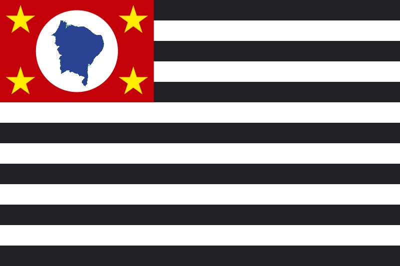
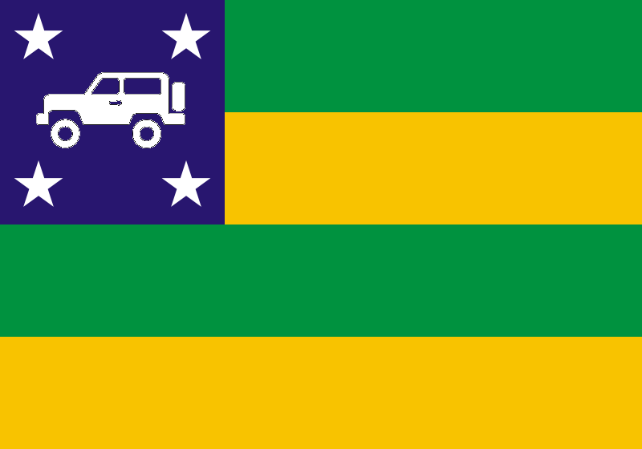
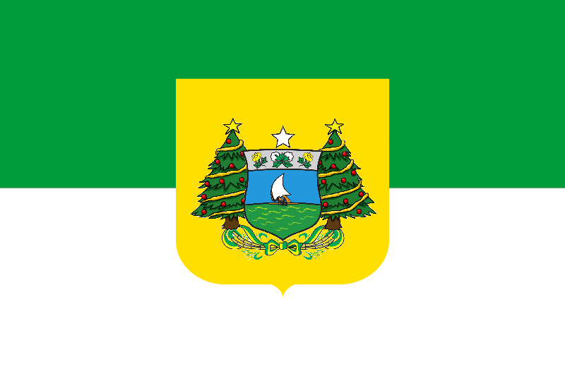
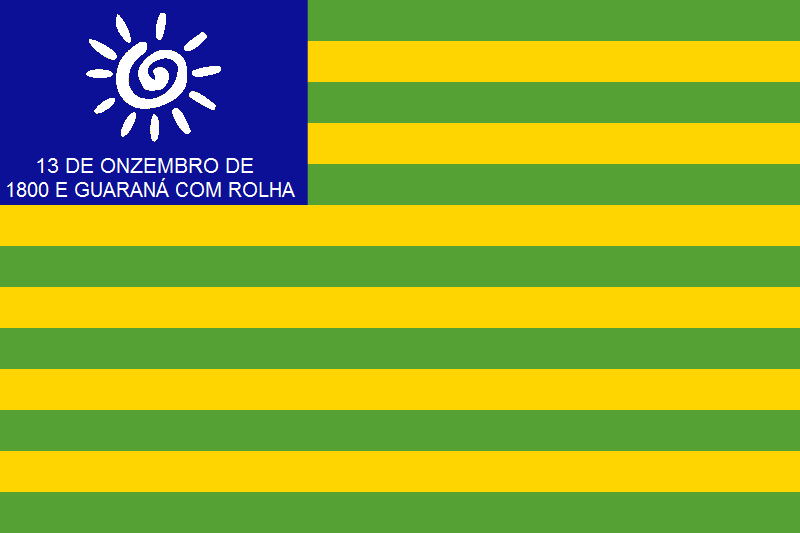
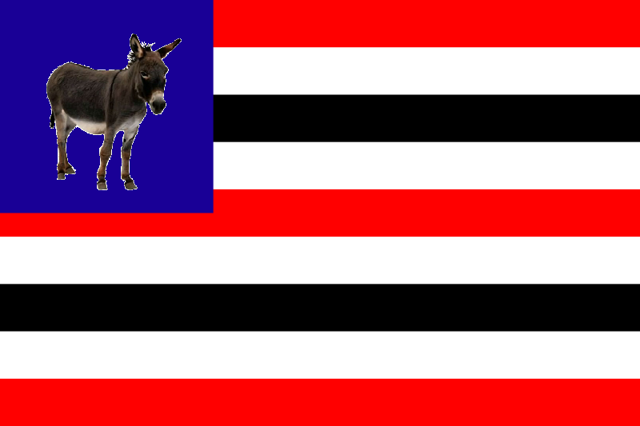
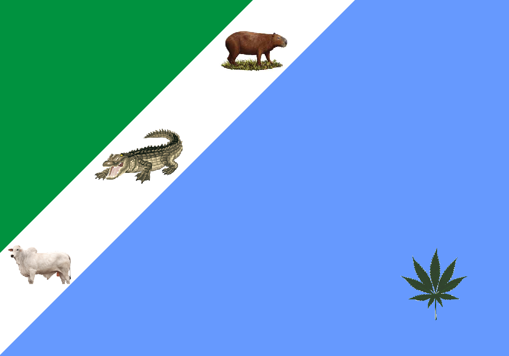
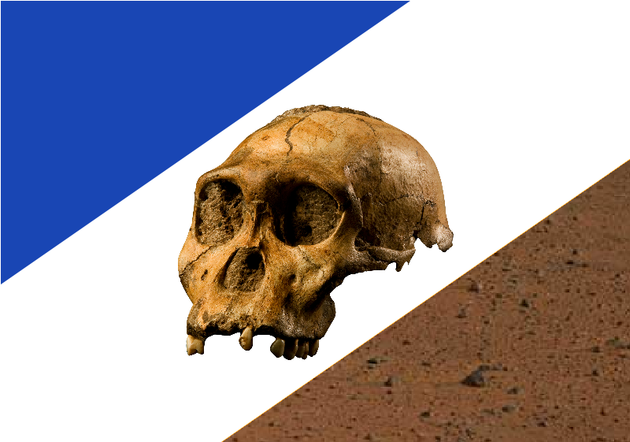
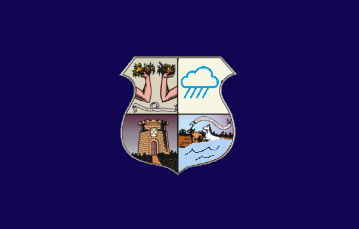

Tabela
Gaspar é meu País
| Estado |
População |
Capital |
Região |
Bandeira |
| Santa Catarina |
8 Milhões |
Florianopolis |
Região Sul |
 |
| Rio Grande do Sul |
10,8 Milhões |
Porto Alegre |
Região Sul |
|
| Paraná |
11,8 Milhões |
Curitiba |
Região Sul |
|
| São Paulo |
46 Milhões |
São Paulo |
Região Sudeste |
 |
| Rio Janeiro |
16 Milhões |
Rio de Janeiro |
Região Sudeste |
|
| Minas Gerais |
20,5 Milhões |
Belo Horizonte |
Região Sudeste |
|
| Espírito Santo |
4 Milhões |
Vitória |
Região Sudeste |
|
| Bahia |
14,5 Milhões |
Salvador |
Região Nordeste |
|
| Sergipe |
2,9 Milhões |
Aracaju |
Região Nordeste |
 |
| Pernambuco |
9 Milhões |
Recife |
Região Nordeste |
|
| Paraíba |
3,9 Milhões |
João Pessoa |
Região Nordeste |
 |
| Rio Grande do Norte |
3,3 Milhões |
Natal |
Região Nordeste |
 |
| Ceará |
8,8 Milhões |
Fortaleza |
Região Nordeste |
|
| Piaui |
3,2 Milhões |
Teresina |
Região Nordeste |
 |
| Maranhão |
6,7 Milhões |
São Luís |
Região Nordeste |
 |
| Mato Grosso do Sul |
2,75 Milhões |
Campo Grande |
Região Centro-Oeste |
 |
| Mato Grosso do Norte |
3,6 Milhões |
Cuiabá |
Região Centro-Oeste |
|
| Goiás |
7 Milhões |
Goiania |
Região Centro-Oeste |
|
| Distrito Federal |
2,8 Milhões |
Brasília |
Região Centro-Oeste |
 |
| Tocantins |
1,5 Milhões |
Palmas |
Região Norte |
 |
| Pará |
8,1 Milhões |
Belém |
Região Norte |
 |
| Amapá |
0,7 Milhões |
Macapá |
Região Norte |
|
| Roraima |
0,6 Milhões |
Boa Vista |
Região Norte |
|
| Amazonas |
3,9 Milhões |
Manaus |
Região Norte |
|
| Rondonia |
1,5 Milhões |
Porto Velho |
Região Norte |
|
| Acre |
0,3 Milhões |
Rio Branco |
Região Norte |
|